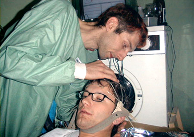

|  |
........... MIND-O-MATIC GEHIRNWASCHMASCHINE
Sie werden sich schon oft gefragt haben: Wie in aller Welt soll ich diese ganzen schmutzigen Gedanken aus dem Kopf bekommen, wie kann ich tiefenwirksame Gehirnwäsche auch zuhause praktizieren?...
Die SHIFZ Abtlg. f. Gehirnwäsche hat nach Jahren intensiver Forschung die Antwort gefunden: Die neue MIND-O-MATIC Gehirnwaschmaschine stellt einen Meilenstein in der Entwicklung von kompakten Gehirnwaschmaschinen für den Hausgebrauch dar.
In der Waschtrommel entfalten mittels computergestützten EEG-Neuro-Feedbacks die einzelnen, auf die verschiedenen Bedürfnisse zugeschnittenen Waschprogramme ihre reinigende Wirkung auf Geist und Psyche. Sie liegt mit ihrer genial einfachen 2-Knopf, 1-Drehknopf - Bedienelemente-Lösung und dem integrierten Weichspüler voll im Trend der modernen Haushaltstechnologie. Das vorgestellte Modell ermöglicht es dem überforderten Zivilisationsgewohnten den Alltag wieder in vollen Zügen zu geniessen. Die Gehirnwaschmaschine hat mindestens zwei Seiten. Sie IST einerseits unsere Umwelt, die uns beeinflußt, die Maschine, die uns programmiert, uns zu gesellschafts-kompatiblen Kreaturen macht.
Andererseits VERSINNBILDLICHT sie den Rachen des Löwen, in den wir unseren Kopf stecken müssen, um, im Vertrauen auf den Einklang mit der Bestie unseren Geist von allem anderen zu befreien als dem Leben selbst und den Faden an dem es hängt, der da heißt: NERV.
|